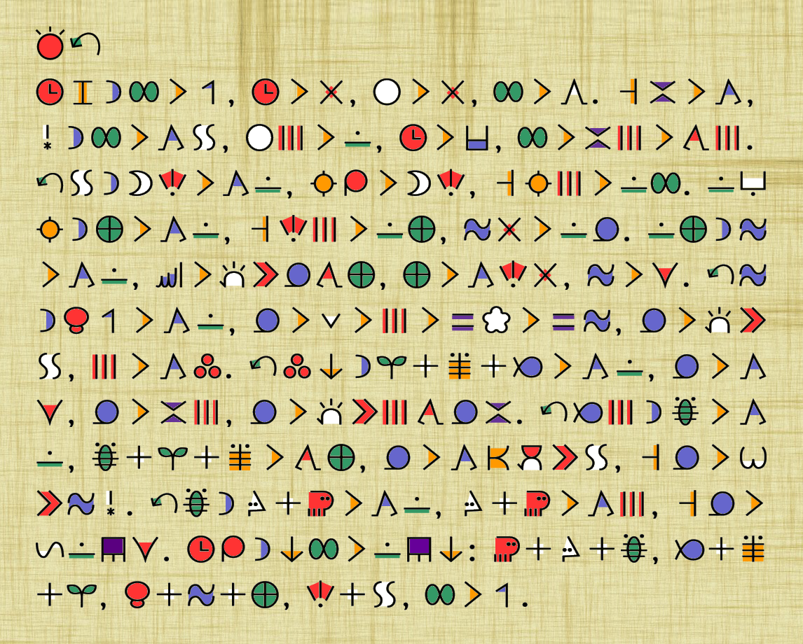

sitelen pona [Link it to: https://sona.pona.la/wiki/sitelen_pona] is a logographic writing sytstem for toki pona, designed by Sonja Lang. As a logography, each word is written with it's own symbol. It is typically written from left to right, in horizontal lines from top to bottom. There are two different ways that individuals normally type sitelen pona. The first (and most common) way is to render text while you type it with a special font. This way you can type in latin characters while the font displays it in sitelen pona. Go ahead, give it a try!
toki pona does not define common methods of quoting text, adding punctuation, or even ending sentences. For longer sitelen pona texts, it is common to end a sentence in a period, regardless of if the sentence was an exclamation, question, or merely a comment. For shorter texts, it is common to list each sentence on a separate line, with no punctuation. Due to the nature of a logographic language, sitelen pona can have certain common groups of words, or lexicals (such as "toki pona") grouped together into one symbol. With most fonts, this can be accomplished by means of a plus or minus sign immediately following the word.
sitelen pona has it's own way of writing names of people or places as well. As they are not official words, there is no recognizable symbol for these names. Instead, the name of the place or person is tokiponized (converted to the sounds that toki pona uses) and written in a collection of official words, sound by sound, tied to the first letter of each word in a heiroglyphic-like cartoushe. This is typically done with square brackets, with preceeding underscores in front of each inner word to extend the top and bottom of the cartoushe. As an example, jan Sonja could be typed as jan [_sama_o_noka_jan_a] to be rendered in sitelen pona. The second way to render sitelen pona is through something called UCSUR. UCSUR is an allocation of unicode codepoints mapping to each word in toki pona. To type in UCSUR, you will need to have a special keyboard or software on your computer. It is out of scope of this page, but you can learn more here.
